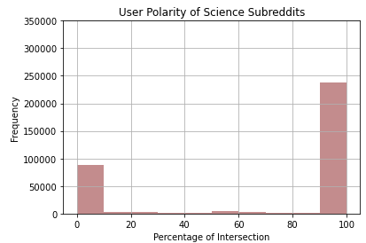
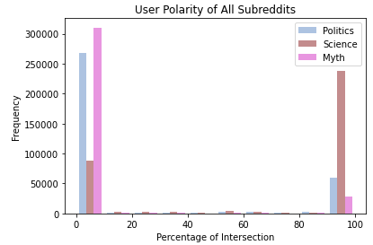

To analyze variations in echo chambers, we will be studying how likely users are to participate in and consume either factual, politically misinformative, or mythological information. Observing the tendencies of any one subreddit’s user base will shed light on its users’ general consumption patterns. Aggregated usernames and their associated subreddits, therefore, will provide the basis for this analysis. One metric that we used to try and detect echo chambers within Reddit were to look at the user polarity, which is essentially how often a user interacts outside of the subreddit that they usually post in. As mentioned before, we had defined three umbrella categories that we wanted to look at: politically misinformation, urban myth misinformation, and scientific information. User polarity would then define how often a user interacts with the other two subreddit categories. These visualizations are showing the user polarities for all three categories that we had picked out. The y axis is the percentage of intersection, so this is telling us how often a user has posted in that specific category of subreddits. For example, if a user has 0 percent of intersection in the myth subreddits, this would tell us that this user has never posted in the myth subreddits before. And 100% would be the opposite, where all of the user’s posts have been dedicated just towards myth subreddits only, and has never posted in science or political subreddits. Somewhere in the middle, let's say 40% intersection in myth, would mean that a user has posted 40% of their total posts in the myth section, and for example, 30% in science and 30% in politics. The user polarities of all three categories add up to 100% per user. The x axis is just the frequency, or the amount of users.
User polarity is calculated by the following:
These are the user polarities for myth subreddits. Myth has the least amount of posts per user. As you can see, they have the least intersection out of the three categories that we had picked out, with an overwhelming majority of Reddit users in our data set having never posted in myth subreddits before. This isn’t too surprising, as we looked at subreddits like Sasquatch, alien sightings, and Bigfoot. It’s a fairly small community of Reddit users, so this was somewhat expected.
These are the user polarities for political subreddits. The findings for the political subreddits are similar to that of the myth one, just on a smaller scale. The majority of users haven’t ever posted in a political subreddit before, but there is a larger amount of users who have dedicated all of their comments to political discussions compared to that of the myth subreddit we looked at. This was surprising, as we would expect for there to be a larger political discussion, especially since we had gathered data from March to June of last year, which was right before the 2020 presidential election.
And lastly, the science subreddit had the most versatile user base out of the three that we have seen. It is the opposite of the two categories we had previously looked at, where there are more users who have dedicated all their posts to science subreddits than users with 0 posts in the science section. There are also more of a variety of users who are mixed, as you can see in the 60% region. This finding was also somewhat surprising, as we had thought there would have been more users along the middle rather than in the extremes at 0% and 100%, since topics like scientific findings aren’t too polarizing.
 This is a graph showcasing all of the three categories we picked out. We can directly see the differences between each kind of content on Reddit. Again, to summarize, political and myth subreddits are very similar in terms of how the users in these respective subreddits act, while users in science subreddits act quite differently than what we would see in political and myth users.